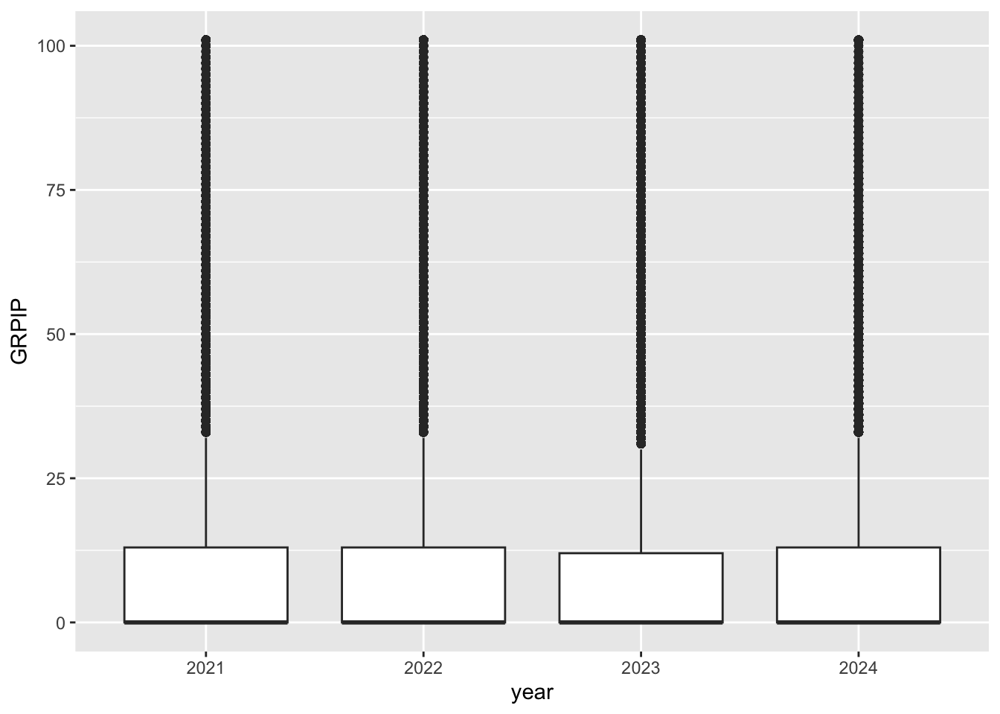
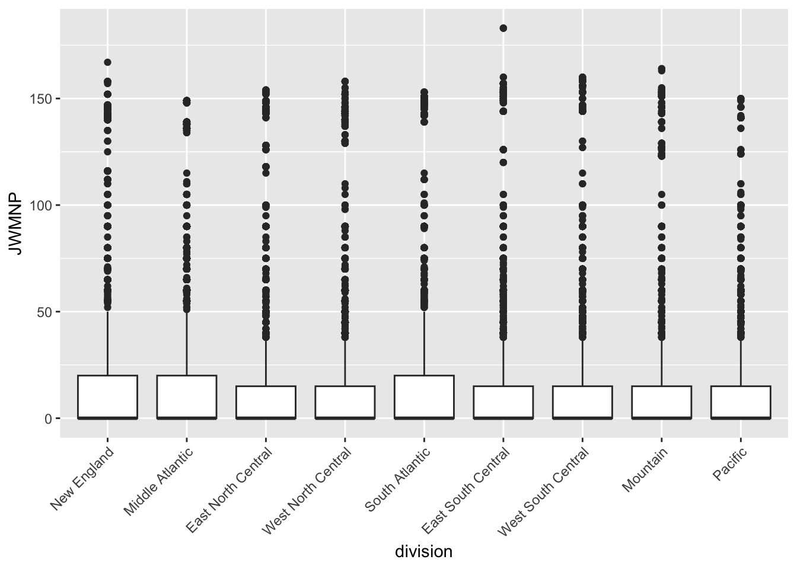

Housing Costs and Commuting Patterns Across the United States, 2021-2024
Author
Stanley Xiao
Introduction
Housing costs and commuting are two important parts of everyday life that vary significantly across the United States. Differences in housing costs, income, geography, and commuting patterns result in very different experiences depending on which part of the country someone lives in.
In this project, I use data from the U.S. Census Bureau’s Public Use Microdata Sample (PUMS) API to investigate housing costs and commuting patterns across the United States from 2021 through 2024. I’m particularly interested in examining how housing cost burden and commute duration vary across geographic areas and over time.
I created a set of reusable R functions to obtain and process data from the Census API. I also developed custom summary and plotting methods that account for the person weights included in the dataset. I used these functions to investigate patterns in housing costs and commuting across different geographic areas and years.
Data Source
The data for this project comes from the U.S. Census Bureau’s Public Use Microdata Sample (PUMS) API. PUMS provides person-level-like records containing demographic, housing, education, and commuting information. This project focuses on data from 2021, 2022, 2023, and 2024.
Setup
#Install packages as necessarylibrary(httr)library(jsonlite)library(lubridate)
Attaching package: 'lubridate'
The following objects are masked from 'package:base':
date, intersect, setdiff, union
── Conflicts ────────────────────────────────────────── tidyverse_conflicts() ──
✖ dplyr::filter() masks stats::filter()
✖ purrr::flatten() masks jsonlite::flatten()
✖ dplyr::lag() masks stats::lag()
ℹ Use the conflicted package (<http://conflicted.r-lib.org/>) to force all conflicts to become errors
Processing Census Variable Information
The variables returned by the Census API are usually in the form of numeric codes rather than descriptive labels. The first step is to obtain the variable metadata for each year which will then be converted into meaningful values later in the analysis.
The state variable also differs across survey years. The 2021 and 2022 data use ‘ST’ while the 2023 and 2024 data use ‘STATE’. The following function accounts for this difference when retrieving the required variable information.
variables_needed <-c("AGEP", "GASP", "GRPIP", "JWAP", "JWDP", "JWMNP", "PWGTP", "FER", "HHL", "SCH", "SCHL", "SEX", "REGION", "DIVISION")get_variable_info <-function(year) {#Check that the year is validif (!year %in%2021:2024) {stop("Year must be 2021/2022/2023/2024") }#URL for selected year url <-paste0("https://api.census.gov/data/", year,"/acs/acs1/pums/variables.json" )#Query Census API response <-GET(url)#Parse JSON variable_data <-content( response,as ="parsed",type ="application/json" )#State variable differs depending on year state_var <-if (year <=2022) {"ST" } else {"STATE" } #Add the appropriate state variable vars <-c(variables_needed, state_var)#Keep only variables needed for the project variable_data$variables[vars]}#Variable information for each yearvariables_2021 <-get_variable_info(2021)variables_2022 <-get_variable_info(2022)variables_2023 <-get_variable_info(2023)variables_2024 <-get_variable_info(2024)#Combine yearly variable info into one listcensus_variables <-list('2021'= variables_2021,'2022'= variables_2022,'2023'= variables_2023,'2024'= variables_2024)#Check for categorical variable value (FER, HHL, SCH, SCHL, SEX)variables_2024$SEX$values$item
$`1`
[1] "Male"
$`2`
[1] "Female"
#Create data folderdir.create("data", showWarnings =FALSE)#Save variable informationsaveRDS(census_variables, "data/census_variables.rds")
The saved metadata (census_variables) will serve as a reference for interpreting the Census API data, allowing categorical variables to be converted into descriptive factor levels.
Querying Single-Year Census Data
Next, we implement functions to query single-year PUMS data and convert the response into a tibble. The function allows users to select between numeric, categorical, and geographic variables.
Second helper Census time interval \(\to\) midpoint
#Convert Census time interval to midpointtime_midpoint <-function(time_interval) {#Return NA for missing values or non-time valuesif (is.na(time_interval) ||length(time_interval) ==0||!grepl(" to ", time_interval) ) {return(NA) }#Split beginning and ending times times <-strsplit(time_interval, " to ")[[1]]#Remove periods from a.m and p.m. times <-gsub("\\.", "", times)#Convert to times start_time <-parse_date_time(times[1], "I:M p") end_time <-parse_date_time(times[2], "I:M p")#Calculate midpoint midpoint <- start_time + ((end_time - start_time) /2)return(midpoint)}
Third helper to retrieve census data
#API Key is now required to access Census datacensus_api_key <-Sys.getenv("CENSUS_API_KEY")get_census_data <-function(year =2024,numeric_vars =c("AGEP", "PWGTP"),categorical_vars ="SEX",geography ="State",geo_value =NULL,key = census_api_key) {#Allowed variables allowed_numeric <-c("AGEP", "GASP", "GRPIP", "JWAP", "JWDP", "JWMNP", "PWGTP") allowed_categorical <-c("FER", "HHL", "SCH", "SCHL", "SEX") allowed_geography <-c("Region", "Division", "State")#Check yearif (length(year) !=1||!year %in%2021:2024) {stop("Year must be 2021/2022/2023/2024") }#Check numeric variablesif (!all(numeric_vars %in% allowed_numeric)) {stop("Invalid numeric variable") }if (!"PWGTP"%in% numeric_vars) {stop("PWGTP must be included as a numeric variable") }if (length(setdiff(numeric_vars, "PWGTP"))<1) {stop("At least one numeric variable besides PWGTP must be selected") }#Check categorical variablesif (length(categorical_vars) <1||!all(categorical_vars %in% allowed_categorical)) {stop("At least one valid categorical variable must be selected") }#Check geographyif (length(geography) !=1||!geography %in% allowed_geography) {stop("Geography must be Region, Division, or State") }#Read variable metadata variable_info <-readRDS("data/census_variables.rds")[[as.character(year)]]#Determine Census geography variable geo_var <-if (geography =="State") {if (year <=2022) "ST"else"STATE" } else {toupper(geography) }#Obtain allowable geography values geo_values <- variable_info[[geo_var]]$values$item#Use first available geography as defaultif (is.null(geo_value)) { geo_value <-names(geo_values)[1] }#Check selected geography valueif (tolower(geo_value) !="all"&&!geo_value %in%names(geo_values)) {stop("Invalid geography value selected") }#Variables requested from API selected_vars <-unique(c(numeric_vars, categorical_vars))#Create Census API URL url <-paste0("https://api.census.gov/data/", year,"/acs/acs1/pums" )#Allow one geography value or all valuesif(tolower(geo_value) =="all") { geography_query <-"*" } else { geography_query <- geo_value }#Query Census API response <-GET(url, query =list(get =paste(selected_vars, collapse =","),'for'=paste0(tolower(geography), ":", geography_query),key = key ))#Convert response to tibble census_data <-response_to_tibble(response)#Convert numeric variables (JWAP & JWDP are time variables and not ordinary variables) regular_numeric <-intersect( numeric_vars,c("AGEP", "GASP", "GRPIP", "JWMNP", "PWGTP") ) census_data[regular_numeric] <-lapply( census_data[regular_numeric], as.numeric )#Convert categorical variables to factorsfor (variable in categorical_vars) { value_labels <- variable_info[[variable]]$values$item census_data[[variable]] <-factor( census_data[[variable]],levels =names(value_labels),labels =unlist(value_labels) ) }##Convert time variables to midpoint time_vars <-intersect( numeric_vars,c("JWAP", "JWDP") )for (variable in time_vars) {#Get time interval labels time_labels <- variable_info[[variable]]$values$item#Match Census codes to time intervals intervals <-sapply( census_data[[variable]],function(code) {if (is.na(code) ||!code %in%names(time_labels)) {NA_character_ } else { time_labels[[code]] } } )#Convert intervals to midpoint census_data[[variable]] <-as.POSIXct(sapply( intervals,function(x) as.numeric(time_midpoint(x)) ),origin ="1970-01-01",tz ="UTC" ) }#Add census classclass(census_data) <-c("census", class(census_data))return(census_data)#End of get_census_data function}
Below are test cases used during development
#Demonstrate Census time midpoint conversiontime_midpoint("11:00 p.m. to 11:04 p.m.")
[1] "0000-01-01 23:02:00 UTC"
time_midpoint("4:10 a.m. to 4:19 a.m.")
[1] "0000-01-01 04:14:30 UTC"
time_midpoint("Not a time value")
[1] NA
#Test cases used during developmenttest_census <-get_census_data()head(test_census)class(test_census)#Test JWAP and JWDP time conversiontime_test <-get_census_data(year =2024,numeric_vars =c("JWAP", "JWDP", "PWGTP"),categorical_vars ="SEX",geography ="Division",geo_value ="1")head(time_test[, c("JWAP", "JWDP")])class(time_test$JWAP)class(time_test$JWDP)
Combining Multiple Years
The single-year function can be extended to compare Census data across multiple survey years. The following function allows the user to select multiple years and combines the results into one tibble.
get_census_years <-function(years =2021:2024,numeric_vars =c("AGEP", "PWGTP"),categorical_vars ="SEX",geography ="State",geo_value =NULL) {#Allow user to select all yearsif (length(years) ==1&&tolower(as.character(years)) =="all") { years <-2021:2024 }#Check yearsif (!all(years %in%2021:2024)) {stop("years must be 2021/2022/2023/2024 or all") }#Empty list to store each year census_list <-list()#Get data from each yearfor (year in years) { census_list[[as.character(year)]] <-get_census_data(year = year,numeric_vars = numeric_vars,categorical_vars = categorical_vars,geography = geography,geo_value = geo_value )#Add year variable census_list[[as.character(year)]]$year <-factor(year) }#Combine years into one tibble census_data <-bind_rows(census_list)#Add census classif (!inherits(census_data, "census")) {class(census_data) <-c("census", class(census_data)) }return(census_data)}
#Test cases used during developmenttest_multiple <-get_census_years( years =c(2022, 2024))head(test_multiple)class(test_multiple)table(test_multiple$year)test_all_years <-get_census_years(years ="all")class(test_all_years$year)
Generic Census Summary Function
Because each row of the PUMS data may represent multiple people, the PWGTP variable must be considered when summarizing the data. The below custom summary.census() method calculates weighted means and standard deviations for numeric variables and weighted counts for categorical variables.
summary.census <-function( object,numeric_vars =NULL,categorical_vars =NULL) {#Find numeric variables if none are specifiedif (is.null(numeric_vars)) { numeric_vars <-names(object)[sapply(object, is.numeric)]#Don't summarize weight or time variables numeric_vars <-setdiff( numeric_vars,c("PWGTP", "JWAP", "JWDP") ) }#Find categorical variables if none are specifiedif (is.null(categorical_vars)) { categorical_vars <-names(object)[sapply(object, is.factor)] }#Store results results <-list()#Summarize numeric variablesfor (variable in numeric_vars) { x <- object[[variable]] weights <- object$PWGTP#Remove missing values keep <-!is.na(x) &!is.na(weights) x <- x[keep] weights <- weights[keep]#Weighted mean weighted_mean <-sum(x * weights) /sum(weights)#Weighted standard deviation weighted_sd <-sqrt( (sum((x^2) * weights) /sum(weights)) - (weighted_mean^2) ) results[[variable]] <-c(mean = weighted_mean, sd = weighted_sd) }#Summarize categorical variablesfor (variable in categorical_vars) { counts <-tapply( object$PWGTP, object[[variable]], sum,na.rm =TRUE ) results[[variable]] <- counts }return(results)}
A custom plot.census() method can also be used to compare a numeric variable across the levels of a categorical variable. The person weights are included in the plot so that each observation is represented according to its PUMS weight.
For the final investigation, I use the functions developed above to examine housing cost burden and commuting patterns across the United States from 2021 through 2024. I focus on differences across Census divisions and over time. The primary variables used in this investigation are gross rent as a percentage of household income (GRPIP) and travel time to work (JWMNP). I also include PWGTP so that observations can be properly weighted.
#Retrieve data for all Census divisions from 2021-2024investigation_data <-get_census_years(years =2021:2024,numeric_vars =c("GASP", "GRPIP", "JWMNP", "PWGTP"),categorical_vars ="SEX",geography ="Division",geo_value ="all")#Save data locally for future usesaveRDS(investigation_data, "data/investigation_data.rds")
Here, I load the saved investigation data and account for the value 888 in the 2023 commute-time data. According to the Census metadata, 888 represents a suppressed value for select PUMAs in 2023 rather than an actual commute time. These values are converted to missing values before analysis.
Census division codes are returned in numerical format from the Census. They are converted to descriptive labels below.
#Convert division codes to descriptive labelsinvestigation_data$division <-factor( investigation_data$division,levels =1:9,labels =c("New England","Middle Atlantic","East North Central","West North Central","South Atlantic","East South Central","West South Central","Mountain","Pacific" ))
Creating a Random Sample
Because the complete investigation dataset contains more than 13 million observations, a stratified random sample was created for graphical analysis. A reproducible sample of 5,000 observations was selected from each Census division and year combination, resulting in 180,000 observations. The complete dataset was retained for the weighted numerical summaries, while the smaller sample was used to make the graphical analysis computationally manageable.
The resulting random sample contains 180,000 observations and 7 variables.
set.seed(5374)#Random sample within each division and yearinvestigation_sample <- investigation_data |>group_by(division, year) |>slice_sample(n =5000) |>ungroup()#Keep census class for S3 methodsclass(investigation_sample) <-c("census", class(investigation_sample))class(investigation_sample)dim(investigation_sample)table(investigation_sample$division, investigation_sample$year)saveRDS(investigation_sample, "data/investigation_sample.rds")
The custom summary method can also automatically summarize all applicable numeric and categorical variables when no variables are explicitly specified.
$GASP
mean sd
65.32575 137.69520
$GRPIP
mean sd
10.58213 22.13029
$JWMNP
mean sd
10.59874 18.87032
$SEX
Male Female
8861425 8992697
$division
New England Middle Atlantic East North Central West North Central
1957747 1944280 1951703 1962728
South Atlantic East South Central West South Central Mountain
2005051 1968065 2103890 1973218
Pacific
1987440
$year
2021 2022 2023 2024
4564661 4424073 4416541 4448847
Weighted Numerical Summaries (Part 1 of 2): Housing Cost Burden by Year
#Summarize housing cost burden and yearsummary( investigation_data,numeric_vars ="GRPIP",categorical_vars ="year")
The weighted mean gross rent as a percentage of household income (GRPIP) was approximately 10.98%, with a standard deviation of 22.60. The relatively large standard deviation indicates substantial variation in housing cost burden across observations. The weighted counts increased across the four years, from approximately 331.9 million in 2021 to 340.1 million in 2024.
Graphical Summaries (Part 1 of 2): Housing Cost Burden by Year
#Housing cost burden by yearplot( investigation_sample,cat_var ="year",num_var ="GRPIP")

The weighted distributions of gross rent as a percentage of household income are relatively similar from 2021 through 2024. The middle portions of the distributions show little change across the four years, although 2023 appears slightly lower and 2024 slightly higher. Each year also contains many observations with substantially higher rent-to-income percentages, indicating a right-skewed distribution of housing cost burden.
Weighted Numerical Summaries (Part 2 of 2): Commute Time by Census Division
#Summarize commute time and Census divisionsummary( investigation_data,numeric_vars ="JWMNP",categorical_vars ="division")
$JWMNP
mean sd
10.81477 19.36670
$division
New England Middle Atlantic East North Central West North Central
60768149 168248547 189067184 87067729
South Atlantic East South Central West South Central Mountain
271941689 78670123 168120692 102669059
Pacific
213654021
The weighted mean travel time to work (JWMNP) was approximately 10.81 minutes with a standard deviation of 19.37 minutes. The relatively large standard deviation indicates substantial variation in commute times across observations. The weighted counts also differ across Census divisions, reflecting differences in the populations represented by each geographic area.
Graphical Summaries (Part 2 of 2): Commute Time by Census Division
#Commute time by Census divisionplot( investigation_sample,cat_var ="division",num_var ="JWMNP") +theme(axis.text.x =element_text(angle =45,hjust =1 ) )
Warning: Removed 17 rows containing non-finite outside the scale range
(`stat_boxplot()`).

Commute-time distributions are broadly similar across Census divisions, although some regional differences are visible. The South Atlantic and New England divisions appear to have somewhat higher typical commute times than several of the other divisions. All divisions also contain observations with much longer commute times, producing right-skewed distributions with numerous high values.
Conclusion
The results suggest that housing cost burden remained relatively similar across the four years examined, although substantial variation exists among individual observations. Commute-time distributions were also broadly similar across Census divisions, with some differences in their typical commute times and considerable variation within each division.
Overall, this project demonstrates how Census PUMS data can be retrieved, processed, summarized, and visualized using reusable R functions. Incorporating the PUMS person weights allowed the analysis to account for the number of people represented by each observation.